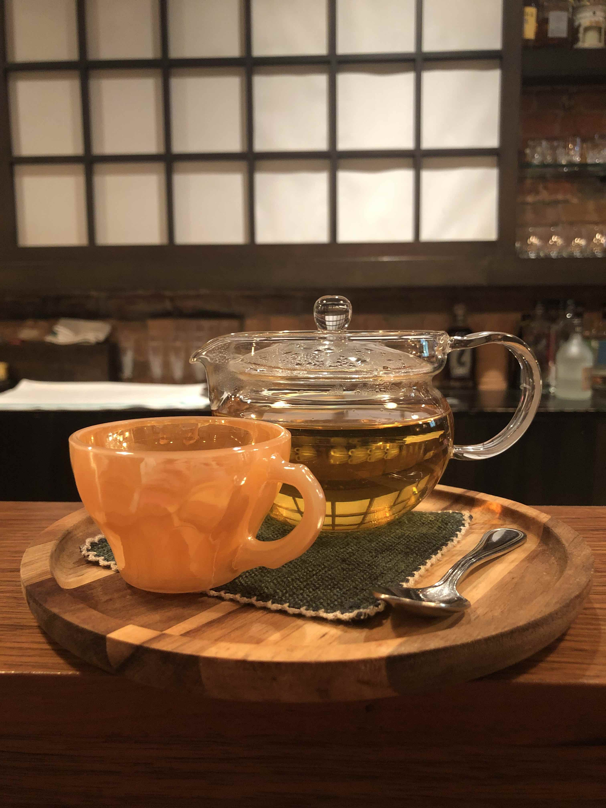

Green tea is very common, and is processed in the exact same way that black tea is, except the process is shorter, and the fermentation process is more limited. Even this small change in process can create very different flavors, aromas, and caffeine content. Green tea is a flavor that I really enjoy, but I find that I do not drink it as much as other teas becuase it can be more subtle. However, taking the time to learn about new teas, watch it steep, and pour two cups to share with a friend is always worth the time. Green tea does not dissapoint!

A pot of tea can be a feat for the eyes as well as the tastebuds.
The Oat Milk Matcha Latte
Information provided from my own knowledge, along with excerpts from the "Tea" entry in the encyclpedia Brittanica.